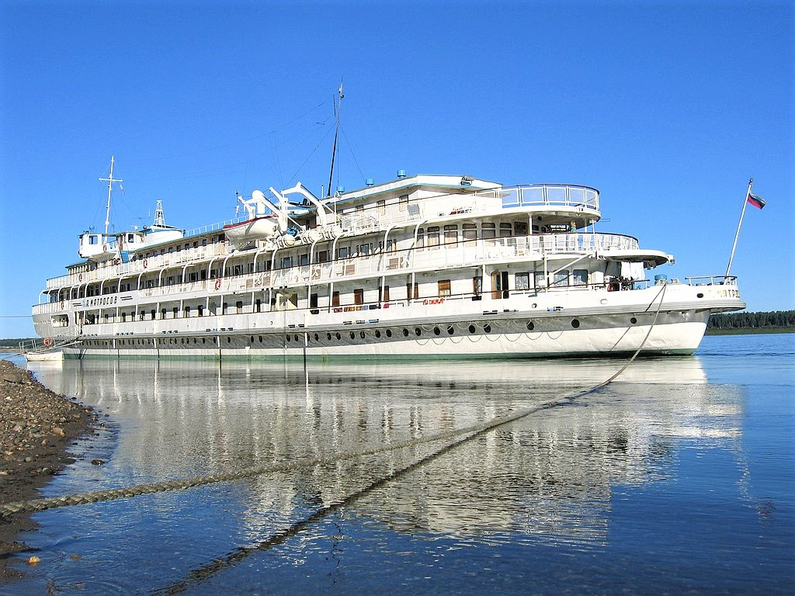

|  |
Акционерное общество «ПассажирРечТранс»Узнавай Край с нами! О насО "ПассажирРечТранс" основано в апреле 2006 г. на базе филиала «Красноярское пассажирское агентство», принадлежавшего ОАО "Енисейское речное пароходство". Учредителем и владельцем 100% акций организации является Государственное предприятие Красноярского края "Центр транспортной логистики" АО "ПассажирРечТранс" обслуживает 5 пассажирских линий и 17 линий паромных переправ как регионального, так и межмуниципального значения. |
С 12.01.24г открыта онлайн-продажа билетов на пассажирскую линию Красноярск-Дудинка, Дудинка-Красноярск.
| Пассажирам | Тарифы | Теплоходы | Помощь |
|---|---|---|---|
| Информация для пассажиров | Информация о тарифах | Информация о теплоходах | Для заказчиков |